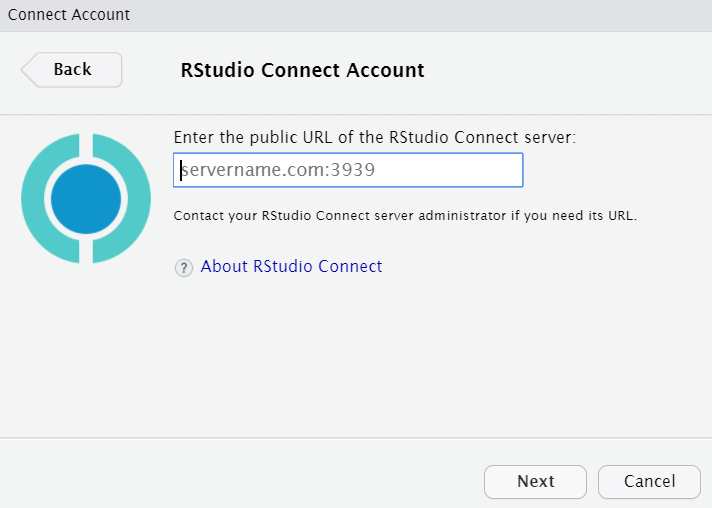

11 Share and Production
11.1 Publish dashboard
Use RStudio Connect to publish work internally in the enterprise
Open the dashboard
app.RfileClick on File
Click on Publish
Connect Account click Next
Select RStudio Connect

- Copy and paste your RStudio Server URL and add
:3939

Enter your credentials
Complete the form
Click Proceed
Click on Connect
Click Publish
11.2 Schedule scoring
Use the tidypredict model to score and write back to the database
Create a new RMarkdown
Start the new RMarkdown by loading all the needed libraries, connecting to the DB and setting
table_flights
library(tidyverse)
library(dbplyr)
library(tidypredict)
library(DBI)
library(lubridate)
con <- DBI::dbConnect(odbc::odbc(), "Postgres Dev")
table_flights <- tbl(con, in_schema("datawarehouse", "flight"))- Read the parsed model saved in exercise 5.6
parsedmodel <- read_csv("parsedmodel.csv")- Copy the code from exercise 5.5 step 4. Load the code into a variable called predictions. Change the model variable to parsedmodel
predictions <- table_flights %>%
filter(month == 2,
dayofmonth == 1) %>%
mutate(
season = case_when(
month >= 3 & month <= 5 ~ "Spring",
month >= 6 & month <= 8 ~ "Summmer",
month >= 9 & month <= 11 ~ "Fall",
month == 12 | month <= 2 ~ "Winter"
)
) %>%
select( season, depdelay) %>%
tidypredict_to_column(parsedmodel) %>%
remote_query()- Change the
select()verb to includeflightid, and rename top_flightid
predictions <- table_flights %>%
filter(month == 2,
dayofmonth == 1) %>%
mutate(
season = case_when(
month >= 3 & month <= 5 ~ "Spring",
month >= 6 & month <= 8 ~ "Summmer",
month >= 9 & month <= 11 ~ "Fall",
month == 12 | month <= 2 ~ "Winter"
)
) %>%
select(p_flightid = flightid, season, depdelay) %>%
tidypredict_to_column(parsedmodel) %>%
remote_query() - Append to the end, the SQL code needed to run the update inside the database
update_statement <- build_sql(
"UPDATE datawarehouse.flight SET nasdelay = fit FROM (",
predictions,
") as p ",
"WHERE flightid = p_flightid",
con = con
)
con <- DBI::dbConnect(odbc::odbc(), "Postgres Dev")
dbSendQuery(con, update_statement)knitthe document to confirm it worksClick on File and then Publish
Select Publish just this document. Confirm that the
parsemodel.csvfile is included in the list of files that are to be published.In RStudio Connect, select
ScheduleClick on
Schedule output for defaultClick on
Run every weekday (Monday to Friday)Click Save
11.3 Scheduled pipeline
See how to automate the pipeline model to run on a daily basis
Create a new RMarkdown document
Copy the code from the Class catchup section in Spark Pipeline, unit 8
library(tidyverse)
library(sparklyr)
library(lubridate)
top_rows <- read.csv("/usr/share/flights/data/flight_2008_1.csv", nrows = 5)
file_columns <- top_rows %>%
rename_all(tolower) %>%
map(function(x) "character")
conf <- spark_config()
conf$`sparklyr.cores.local` <- 4
conf$`sparklyr.shell.driver-memory` <- "8G"
conf$spark.memory.fraction <- 0.9
sc <- spark_connect(master = "local", config = conf, version = "2.0.0")
spark_flights <- spark_read_csv(
sc,
name = "flights",
path = "/usr/share/flights/data/",
memory = FALSE,
columns = file_columns,
infer_schema = FALSE
)Move the saved_model folder under /tmp
Copy all the code from exercise 8.3 starting with step 2
reload <- ml_load(sc, "saved_model")
reload
library(lubridate)
current <- tbl(sc, "flights") %>%
filter(
month == !! month(now()),
dayofmonth == !! day(now())
)
show_query(current)
head(current)
new_predictions <- ml_transform(
x = reload,
dataset = current
)
new_predictions %>%
summarise(late_fligths = sum(prediction, na.rm = TRUE))Change the
ml_load()location to"/tmp/saved_model"Close the Spark session
spark_disconnect(sc)knitthe document to confirm it worksClick on File and then Publish
Select Publish just this document
Click Publish anyway on the warning
In RStudio Connect, select
ScheduleClick on
Schedule output for defaultClick on
Run every weekday (Monday to Friday)Click Save
11.4 Scheduled re-fitting
See how to automate the pipeline to re-fit on a monthly basis
Create a new RMarkdown document
Copy the code from the Class catchup section in Spark Pipeline, unit 8
library(tidyverse)
library(sparklyr)
library(lubridate)
top_rows <- read.csv("/usr/share/flights/data/flight_2008_1.csv", nrows = 5)
file_columns <- top_rows %>%
rename_all(tolower) %>%
map(function(x) "character")
conf <- spark_config()
conf$`sparklyr.cores.local` <- 4
conf$`sparklyr.shell.driver-memory` <- "8G"
conf$spark.memory.fraction <- 0.9
sc <- spark_connect(master = "local", config = conf, version = "2.0.0")
spark_flights <- spark_read_csv(
sc,
name = "flights",
path = "/usr/share/flights/data/",
memory = FALSE,
columns = file_columns,
infer_schema = FALSE
)Move the saved_pipeline folder under /tmp
Copy all the code from exercise 8.4
pipeline <- ml_load(sc, "/tmp/saved_pipeline")
pipeline
sample <- tbl(sc, "flights") %>%
sample_frac(0.001)
new_model <- ml_fit(pipeline, sample)
new_model
ml_save(new_model, "new_model", overwrite = TRUE)
list.files("new_model")
spark_disconnect(sc)Change the
ml_load()location to"/tmp/saved_pipeline"knitthe document to confirm it worksClick on File and then Publish
Select Publish just this document
Click Publish anyway on the warning
In RStudio Connect, select
ScheduleClick on
Schedule output for defaultOn the Schedule Type dropdown, select Monthly
Click Save